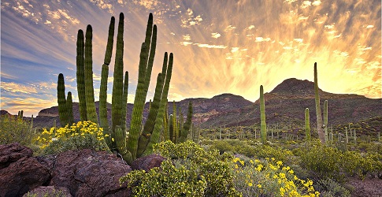
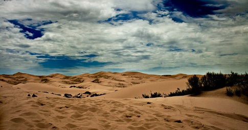

Desiertos en México |
|||||
|  | Desierto de Sonora | Ubicado en gran parte del estado de Sonora, también se extiende a parte de los estados de Sinaloa y Baja California. | Una superficie de 11,975,851 hectáreas | Sus atractivos turísticos son: El Pinacate,la zona arqueológica La Trinchera, El Cañón de la Pintada y La Proveedora. |
|
|  | Desierto de Chihuahua | Ubicado en los estados de Coahuila, Nuevo León, Durango, Zacatecas, San Luis Potosí, y Chihuahua. | Una superficie de 450 000 km² | Su principal atractivo es: Las Dunas de Samalayuca, donde las personas practican sandboard, pasean en cuatrimotos y vehículos 4×4. |
|